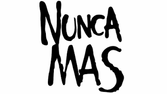

a
aaaa
La ultima dictadura civico-militar sigue dejando huella en todos los argentinos.
El 24 de marzo de 1976, las Fuerzas Armadas derrocaron al gobierno de Isabel Perón mediante un golpe de Estado e instauraron una dictadura militar. Durante este período se impuso el terrorismo de Estado, con persecuciones, secuestros, torturas, asesinatos y desapariciones forzadas de miles de personas. La dictadura finalizó en 1983, con el regreso de la democracia.
Las Fuerzas Armadas derrocaron al gobierno de Isabel Perón e instauraron una dictadura militar. Se inició el llamado Proceso de Reorganización Nacional.
Un grupo de madres comenzó a reunirse frente a la Casa Rosada para reclamar por sus hijos desaparecidos. Sus rondas se convirtieron en un símbolo de resistencia contra la dictadura.
2 de abril de 1982
Las Fuerzas Armadas argentinas desembarcaron en las Islas Malvinas, dando inicio a la guerra contra el Reino Unido. El conflicto terminó el 14 de junio de 1982 con la rendición argentina.
10 de diciembre de 1983
Raúl Alfonsín asumió la presidencia luego de ganar las elecciones democráticas del 30 de octubre. Este hecho marcó el fin de la última dictadura militar en Argentina.
Sobreviviente de la ESMA, relató las torturas que sufrió durante su secuestro y el impacto psicológico que dejaron en ella.
"La experiencia de la tortura es única. No se puede comparar con ninguna otra experiencia de la vida."
Madre de una desaparecida y abuela de un nieto nacido en cautiverio, su hija embarazada y su yerno fueron secuestrados en agosto de 1976.
"Mi hija Ana María y su esposo Julio César Galizzi fueron secuestrados el 27 de agosto de 1976"
Sobreviviente del centro clandestino Club Atlético, fue secuestrada en 1977 cuando tenía 16 años y estaba embarazada de tres meses.
"Permaneciendo casi 4 meses en un centro clandestino de detención conocido como Club Atlético"
Nieto recuperado por Abuelas de Plaza de Mayo, nació en cautiverio en 1980 y fue apropiado por un integrante del Ejército.
"Yo recuperé mi identidad el 2 de noviembre del 2009"
Sobreviviente y víctima de torturas, estaba embarazada cuando fue secuestrada y tuvo que dar a luz durante su traslado bajo custodia de los represores.
"Mi bebita no supo esperar y a la altura del cruce de Alpargatas [...] allí nació Teresa"
Sobreviviente de la ESMA contó cómo los militares lo sacaban del centro clandestino para vigilar a otros compañeros y hacerlo presenciar nuevos secuestros.
"La peor tortura para mí era cuando me presentaban a los recién caídos"
Escribí tu nombre y un mensaje, generá tu tarjeta y compartila.

aaaa
Podés unirte para la conmemoración.